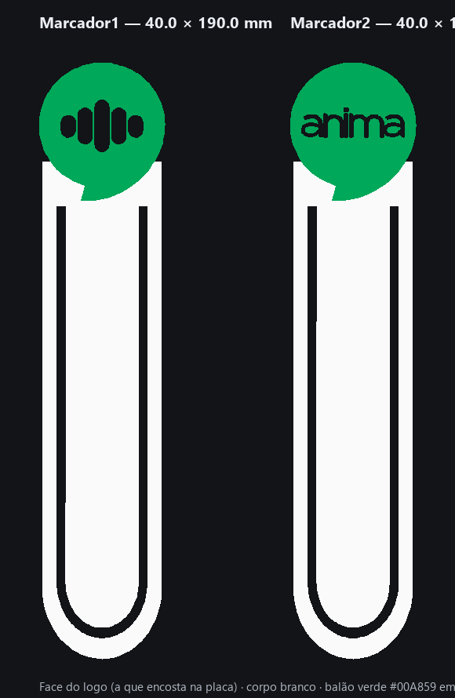
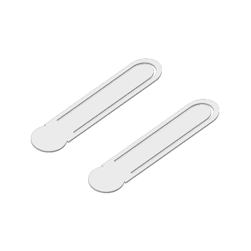

Dois marcadores de encaixe com o logo Anima — um com as barras, outro com a palavra
"anima" — em 40 × 190 × 2 mm, corpo branco e balão verde embutido com superfície lisa.
Projeto para Bambu Lab A1 com AMS lite, os dois numa mesa.

Face do logo, como sai da placa.

Mesa renderizada pelo próprio Bambu Studio (gêmeo de uma cor).
Medidas
40,0 × 190,0 × 2,0 mm cada
Cores
corpo branco · balão verde #00A859 embutido 0,6 mm · barras/letras brancas (vazios no verde)
Filamentos
1 = branco · 2 = verde — Generic PLA @BBL A1 · 220 °C / mesa 65 °C
Orientação
face do logo na placa PEI texturizada — lisa, sem linhas
Tempo · material
109 min · 29,6 g para os dois (sem a purga)
Arquivos
Recomendado · AMS lite
Projeto do Bambu Studio
Os dois marcadores na mesa, filamentos, processo de qualidade e torre de purga já definidos.
Abra, mapeie branco e verde nos slots do AMS, fatie e envie.
Mapa da mesa: peças viradas (vistas através da placa) e torre de purga de 35 mm à direita.
Decisões de layout
40 mm de largura com logo proporcional: balão reduzido a 0,8× (40,0 × 43,9 mm) sem distorção; o corpo do clipe manteve os 37,8 mm de largura originais e ganhou 8,3 mm de trecho reto para fechar 190 mm. Sobreposição balão/corpo mantida proporcional.
Canal do clipe de 2,6 mm atravessando a peça — moldura + língua central, como no marcador de referência. A pedido, o recorte começa 2 mm abaixo da ponta do balão (pernas do canal estendidas 9,5 mm; ponte sólida de 14,2 mm até o topo, escondida atrás do balão).
Letras do Marcador 2 engrossadas 0,2 mm (traços de ~0,75 passam a ~1,1 mm), invisível a olho e seguro no bico 0,4.
Barras e letras brancas iguais ao corpo não são peças: são vazios no verde por onde o corpo aparece. Duas cores bastam.
Ajustes de qualidade sobre o 0.20mm Standard @BBL A1
Ajuste
Valor
Por quê
Gerador de paredes
Arachne
resolve os traços de 1,1 mm sem gap fill
Largura da parede externa
0,38 mm
contorno das cores mais fiel
Largura da 1ª camada
0,42 mm
a 1ª camada é a face do logo — linha fina preserva o detalhe
Velocidade da 1ª camada
30 mm/s
fronteiras de cor limpas
Pé de elefante
0,10 mm
menos esmagamento, as cores não "vazam"
Ironing
topo
o verso do marcador sai liso também
Paredes · fundo/topo
3 · 4/5
peça de 10 camadas sai sólida e firme
Torre de purga
35 mm em (208, 110)
fora das peças, 15 mm de folga, só 3 camadas de altura
Validação. Perfis reais do Bambu Studio 2.8 instalado. O projeto foi fatiado pela linha de
comando do Bambu num gêmeo de um filamento (a CLI não fatia 2 filamentos na A1 — limitação dela, não do
arquivo): 2 objetos de 40,0 × 190,0 × 2,0 mm apoiados em z = 0, 10 camadas, 109 min, 29,8 g, todos os
ajustes conferidos no bloco de configuração do G-code. A troca de cor em si fica para o preview do Bambu Studio.